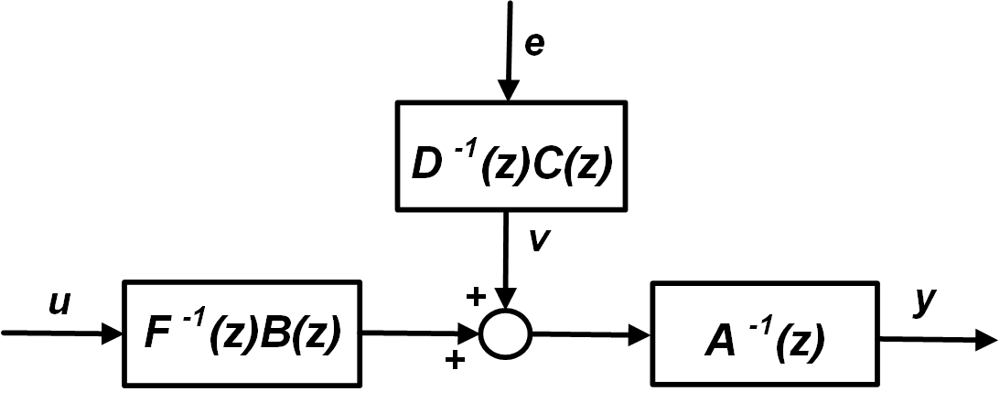

Input-Output Linear Methods¶
Every identified linear input-output model is returned according to the following structure:
where \(G(z)\) and \(H(z)\) are transfer function matrices of polynomials in \(z\), which is the forward shift operator.
The underlying generalized model structure is:
which can be visualized as block diagram:

For each structure, the corresponding orders of the various blocks have to be set, since a specific parameter vector (\(\Theta\)) and a corresponding regressor matrix (\(\phi\), in which the various regressor vectors \(\varphi_k\) are stacked) have to be defined Ljung, 1999.`
Here's a summary of all the available model structures and polynomials used:
| Model structure | \(G(z)\) | \(H(z)\) |
|---|---|---|
| FIR (Finite Impulse Response) | \(B(z)\) | 1 |
| ARX (AutoRegressive with eXogenous inputs) | \(A^{-1}(z)B(z)\) | \(A^{-1}(z)\) |
| ARMAX (AutoRegressive with Moving Average eXogenous inputs) | \(A^{-1}(z)B(z)\) | \(A^{-1}(z)C(z)\) |
| ARMA (AutoRegressive with Moving Average) | \(A^{-1}(z)\) | \(A^{-1}(z)C(z)\) |
| ARARX | \(A^{-1}(z)B(z)\) | \(A^{-1}(z)D^{-1}(z)\) |
| ARARMAX | \(A^{-1}(z)B(z)\) | \(A^{-1}(z)D^{-1}(z)C(z)\) |
| OE (Output Error) | \(F^{-1}(z)B(z)\) | \(1\) |
| BJ (Box-Jenkins) | \(F^{-1}(z)B(z)\) | \(D^{-1}(z)C(z)\) |
| GEN (Generalized) | \(A^{-1}(z)F^{-1}(z)B(z)\) | \(A^{-1}(z)D^{-1}(z)C(z)\) |
For example, in the case of a SISO (single-input single-output) ARMAX model, we have:
where \(\epsilon_k = y_k - \hat{y}_k\) is the prediction error, being \(\hat{y}_k\) the output model, and \(\theta\) is the time-delay.
Following naming convention for orders is used throughout SIPPY:
- \(n_a\) - orders of \(A(z)\): the order of \(n_y\) outputs.
- \(n_b\) - orders of \(B(z)\): the orders of \(n_y \times n_u\) input-output relations. Note that if an input does not influence an output, set that order equal to \(0\);
- \(n_c\) - orders of \(C(z)\): the order of \(n_y\) error models (numerator in \(H(z)\)).
- \(n_d\) - orders of \(D(z)\): the order of \(n_y\) error models (denominator in \(H(z)\)).
- \(n_f\) - orders of \(F(z)\): the order of \(n_y\) undisturbed output model.
- \(\theta\): the \(n_y \times n_u\) input-output time-delays.
Here an example for an ARMAX model for a MIMO system (4 inputs \(\times\) 3 outputs) is illustrated. Denoting \(z^{-1}\) as the backward shift operator, a MISO approach is employed, that is, for each of the three outputs the identified structure is:
| Output 1 | Output 2 | Output 3 | |
|---|---|---|---|
| Input 1 | \(g_{11}=\frac{4 z^3 + 3.3 z^2}{z^5 - 0.3 z^4 - 0.25 z^3 - 0.021 z^2}\) | \(g_{21}=\frac{-85 z^2 - 57.5 z - 27.7}{z^4 - 0.4 z^3}\) | \(g_{31}=\frac{0.2 z^3}{z^4 - 0.1 z^3 - 0.3 z^2}\) |
| Input 2 | \(g_{12}=\frac{10 z^2}{z^5 - 0.3 z^4 - 0.25 z^3 - 0.021 z^2}\) | \(g_{22}=\frac{71 z + 12.3}{z^4 - 0.4 z^3}\) | \(g_{32}=\frac{0.821 z^2 + 0.432 z}{z^4 - 0.1 z^3 - 0.3 z^2}\) |
| Input 3 | \(g_{13}=\frac{7 z^2 + 5.5 z + 2.2}{z^5 - 0.3 z^4 - 0.25 z^3 - 0.021 z^2}\) | \(g_{23}=\frac{-0.1 z^3}{z^4 - 0.4 z^3}\) | \(g_{33}=\frac{0.1 z^3}{z^4 - 0.1 z^3 - 0.3 z^2}\) |
| Input 4 | \(g_{14}=\frac{-0.9 z^3 - 0.11 z^2}{z^5 - 0.3 z^4 - 0.25 z^3 - 0.021 z^2}\) | \(g_{24}=\frac{0.994 z^3}{z^4 - 0.4 z^3}\) | \(g_{34}=\frac{0.891 z + 0.223}{z^4 - 0.1 z^3 - 0.3 z^2}\) |
| Error model | \(h_{1}=\frac{z^5 + 0.85 z^4 + 0.32 z^3}{z^5 - 0.3 z^4 - 0.25 z^3 - 0.021 z^2}\) | \(h_{2}=\frac{z^4 + 0.4 z^3 + 0.05 z^2}{z^4 - 0.4 z^3}\) | \(h_{3}=\frac{z^4 + 0.7 z^3 + 0.485 z^2 + 0.22 z}{z^4 - 0.1 z^3 - 0.3 z^2}\) |
n_a = [3, 1, 2]
n_b = [[2, 1, 3, 2], [3, 2, 1, 1], [1, 2, 1, 2]]
t_h = [[1, 2, 2, 1], [1, 2, 0, 0], [0, 1, 0, 2]]